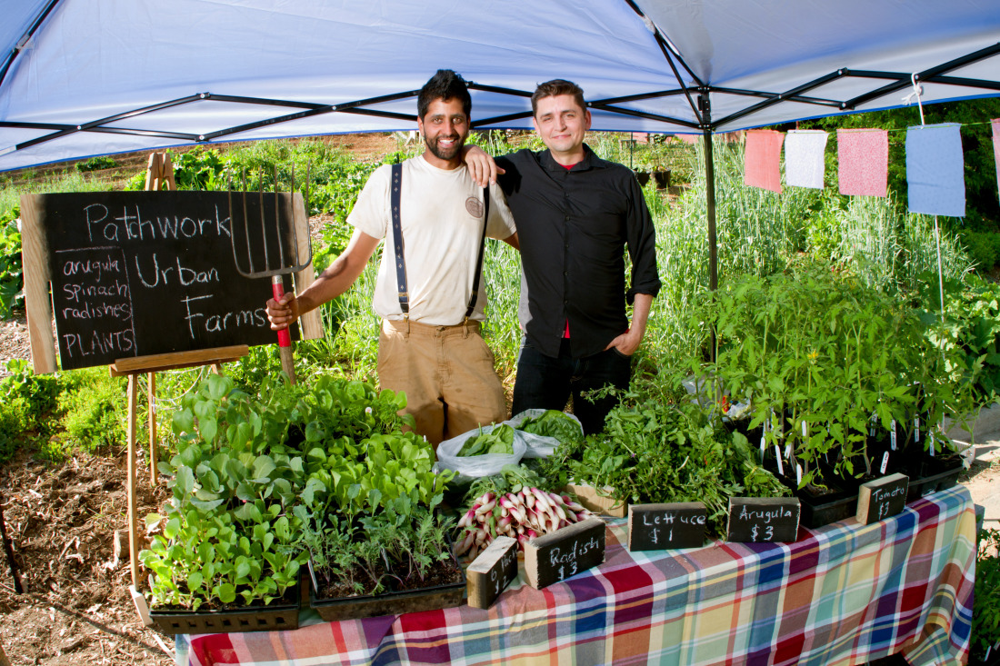
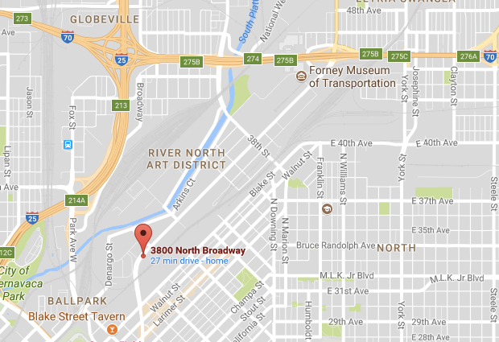

Here at Patchwork 5V we specialize in saving the world one plant at a time. Legally, we can not say that our crops cure cancer, but I personally know of three people who had cancer, ate our lettuce, and later made a full recovery with their cancer in total remission
Organic Vegetables
- Carrots
- Potatoes
- Lettuce(sold out)
- Squash
- Zucchini
Organic Fruit
- Tomatoes
- Peaches
- Apples
- Hydro Bananas
- Avocado
Amazing food. I can't start my day without avacodo toast from RONU 5V.